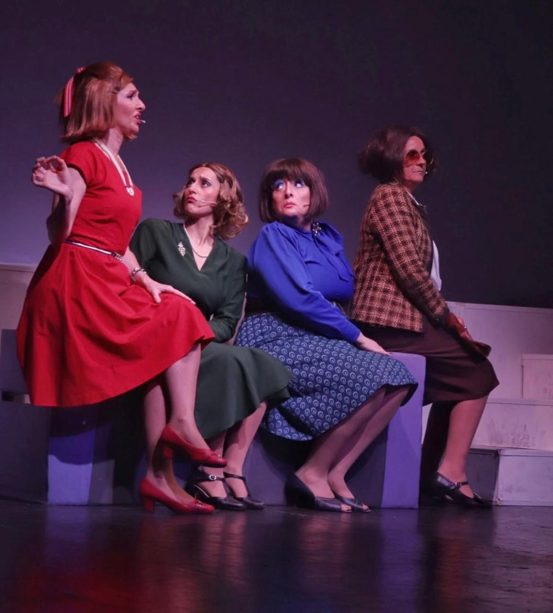
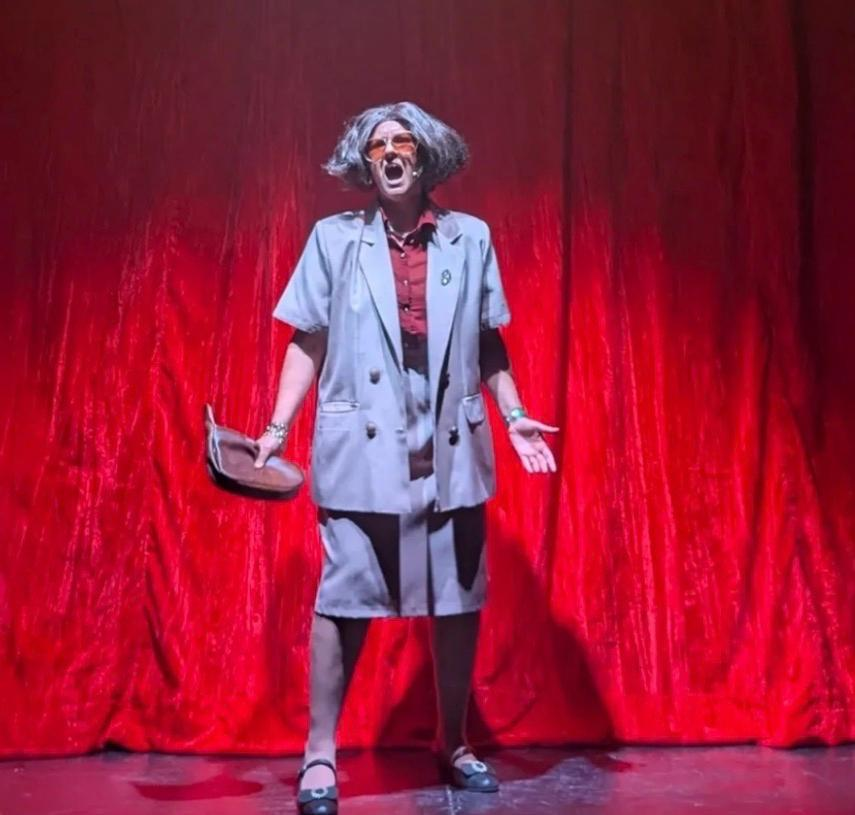
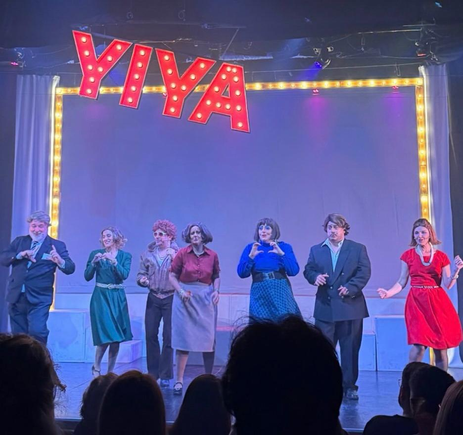

Yiya, el musical fue una de las obras más entretenidas que vi últimamente dentro de la escena teatral cordobesa.
Desde que empieza tiene una energía muy arriba y una estética exagerada que hace que todo se sienta incómodo, absurdo y divertido al mismo tiempo. Aunque está basada en el caso real de Yiya Murano, la famosa "envenenadora de Monserrat", la obra no busca reconstruir la historia de forma seria, sino transformarla en una comedia negra llena de ironía y personajes completamente excéntricos.

Algo que realmente destaca muchísimo es la música de Ale Sergi. Las canciones son pegadizas y tienen una identidad muy marcada, acompañando perfecto el tono medio delirante de la obra. Muchas escenas terminan funcionando justamente por cómo la música, las coreografías y las actuaciones se mezclan constantemente, haciendo que nunca se vuelva pesada ni lenta. Hay una en particular que tengo pegada en la cabeza hasta hoy:

También me parecieron muy buenas las actuaciones, sobre todo porque todos los personajes están llevados al extremo sin perder naturalidad dentro del universo exagerado que propone la puesta. Laura Ortiz como Yiya logra construir un personaje muy magnético y teatral, mientras que el resto del elenco sostiene constantemente el ritmo desde el humor, el movimiento y la energía escénica.
"Incluso alguien que no suele ver teatro musical puede disfrutarla."

Visualmente también funciona muchísimo. Entre las luces, el vestuario, las coreografías y la puesta caricaturesca, la obra logra una estética muy marcada que se mantiene durante toda la función. Siento que incluso alguien que no suele ver teatro musical puede disfrutarla, porque más allá del género, termina siendo una experiencia muy divertida, dinámica y distinta dentro de la escena teatral independiente de Córdoba.
Funciones: Todos los sábados de mayo a las 21hs.
Sala: Teatro La Brújula, Córdoba.
Entradas: teatrolabrujula.com.ar